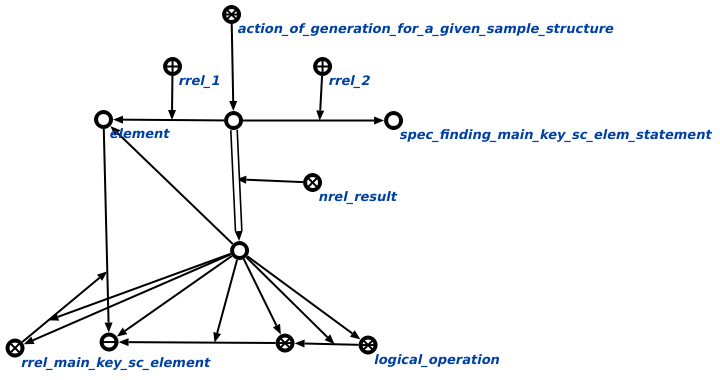

Команда генерировации структуры по заданному образцу предназначена для генерации структуры по заданному образцу. На вход команда получает два аргумента. Первым аргументом команды является сущность, для которой необходимо применить обобщённую спецификацию или необходимую обобщённую спецификацию. Вторым аргументом команды является обобщённая спецификация или необходимая обобщённая спецификация, которую необходимо применить. Результатом выполнения команды является сгенерированная структура, соответствующий поданной на вход спецификации. Например:
